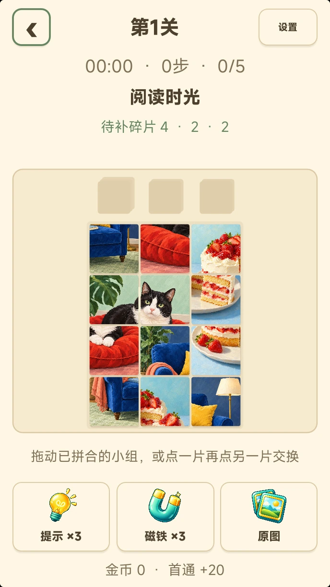
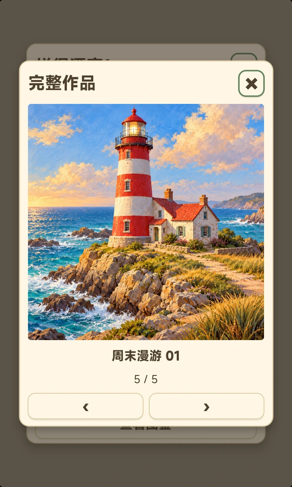
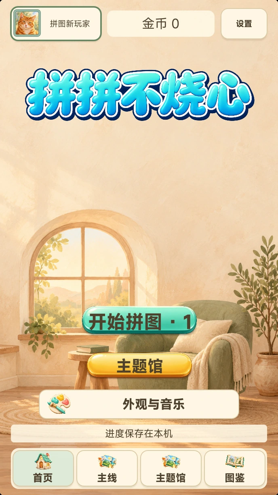
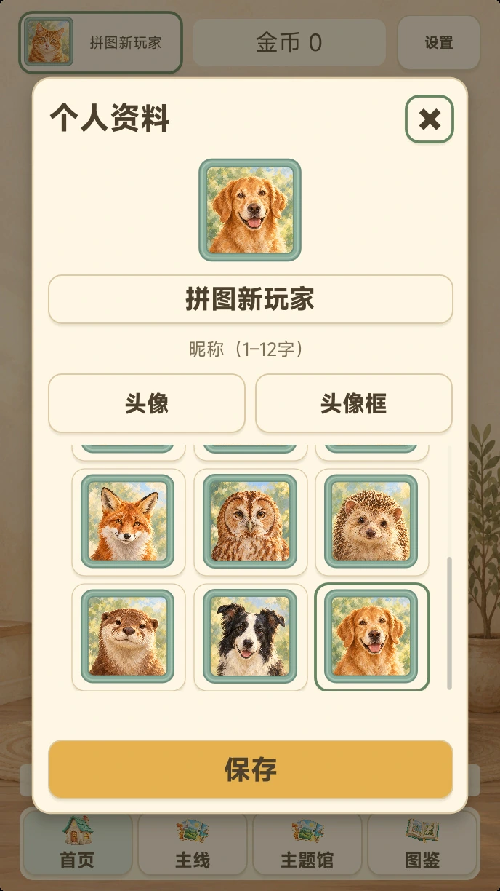
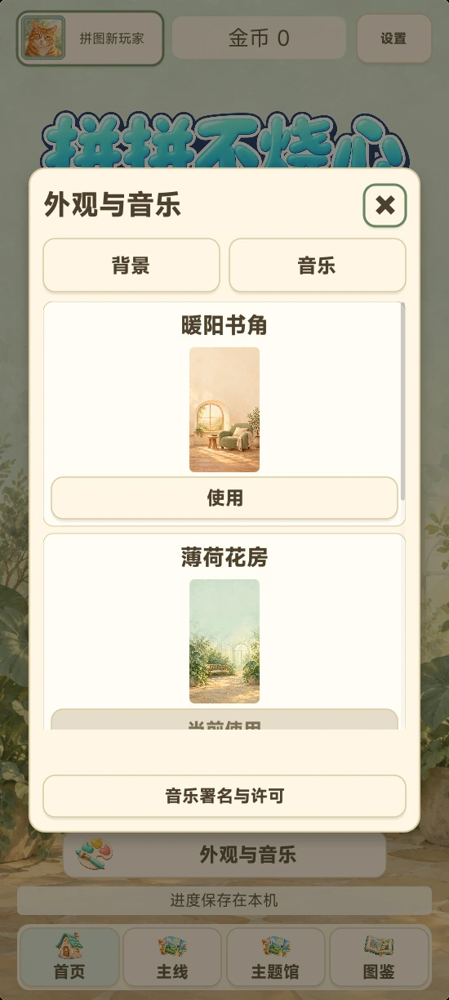

让小屏操作更轻松
用点选交换减少在竖屏上反复拖动小碎片的操作。相邻碎片拼成小组后，玩家可以整组移动，保留已经找到的接缝。
TAPTAP MAKER / 个人 AI 游戏实践
竖屏休闲 / 拼图益智
点选两片交换位置，也能拖动已拼合的小组。每拼好一幅画，碎片就退场并补入新片，玩家在 70 个关卡中逐步收集 40 幅作品。

TapTap 制造 · 已上线
GAMEPLAY / 核心体验
根据画面接缝寻找相邻碎片，点选交换或拖动已拼合的小组。完整图片消除后，待补碎片分批进入棋盘。拼出本关全部作品即可结算，首次通关获得 20 金币，可用于补充提示和磁铁。主线和六个主题馆串起关卡，完成的作品可在图鉴中重看。
TAPTAP GALLERY / 游戏展示图
以下五张为 TapTap 公开展示图，来自 1.0.4 的 Windows 原生 Maker 验证。个人资料展示的是游戏预设昵称与动物头像。
点击任意截图可查看原图。 多张画面可左右滑动，也可聚焦图库后使用方向键浏览。





DESIGN / 规则与取舍
用点选交换减少在竖屏上反复拖动小碎片的操作。相邻碎片拼成小组后，玩家可以整组移动，保留已经找到的接缝。
整图完成就消除，按批次补进新的碎片。最后一批落稳后，棋盘再展开，给剩余拼图腾出操作空间。
把完整画作留在图鉴里，也可以从结算页逐幅回看。金币只在首次通关发放，提示和磁铁库存能带到下一关。
主线和六个主题馆承接关卡进度。个人资料、头像框、首页背景与钢琴曲目提供独立的外观和听感选择。
MY PRACTICE / 项目推进
这次个人作品实践把碎片交换、整图消除和分批补片串成一套可反复游玩的关卡规则，再用首通奖励与图鉴连接局内和局外。迭代时通过原生 Maker 验证点选操作、最后一批补片、结算重开及旧档语言保留，并把新玩家默认简体中文和竖屏体验带到公开版。
TAPTAP / 游戏入口
前往 TapTap 查看当前发行版本、商店实机视频与试玩入口。